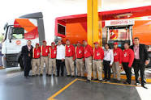
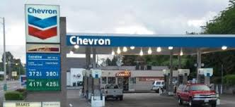
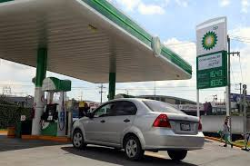

La Reforma Energética de 2013 modificó la naturaleza de Pemex y la transformó en Empresa Productiva del Estado
Presente en cada rincón de México,
Gasolinera Pemex ha escrito miles de historias ofreciendo siempre combustibles de calidad que alimentan el motor del automóvil,
la fuente de energía para que realices tus actividades día a día.>br>
actualmente cuenta con mas de 12000 gasolineras que trabajan bajo el modelo de franquicia, es decir empresarios independientes
diariamente se suministran cerca de 140 millones de litros de gasolinas y diesel

OXXO GAS, la marca propia de FEMSA, inauguró su primera estación de servicio expendedora
de gasolina y diésel en uno de los puntos de mayor consumo del país: la Ciudad de Monterrey,
La primera estación de la marca se ubica en avenida Vasconcelos, en el municipio de San Pedro Garza García de Nuevo León
Oxxo Gas no será una franquicia que distintos distribuidores puedan adquirir, sino la marca propia de FEMSA.
Actualmente, cuentan ya con 355 estaciones de servicio que operan bajo la franquicia de Pemex


El presidente Andrés Manuel López Obrador explicó que todas las gasolinas que se venden en las estaciones de empresas extranjeras
son producidas por Petróleos Mexicanos.
“Las concesiones que se entregaron [para importación de combustibles] no se están utilizando: Pemex es el que distribuye las gasolinas.
Es la misma gasolina de Pemex la que se vende en las gasolineras extranjeras”,